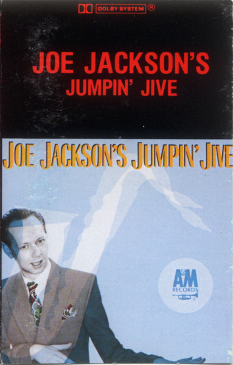

CASSETTE
Joe Jackson's Jumpin' Jive
Joe Jackson
Media: — · Sleeve: —
—
Personal
Discogs SuggestedCA$1.34
Discogs MedianCA$1.34
Discogs HighCA$1.34
- Physical Copy ID
- BB-CAS-172
- Year
- 1981
- Label
- A&M Records
- Catalog #
- CS-69962
- Country
- CACanada
- Genre / Style
- Jazz · Swing